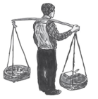

1. MEVLUT KÖYDEYKEN
BU DÜNYA KONUŞSAYDI ACABA NE DERDİ?
Şimdi Mevlut’un kararını, Rayiha’ya bağlılığını ve köpek korkusunu anlamak için çocukluğuna dönelim. Mevlut Konya’nın Beyşehir kazasının Cennetpınar köyünde 1957 yılında doğdu ve on iki yaşına kadar köyden dışarı hiç çıkmadı. İlkokulu başarıyla bitirdikten sonra, kendi durumundaki diğer çocuklar gibi İstanbul’a babasının yanına okumaya ve çalışmaya gideceğini sanıyordu ama babası onu yanına istemeyince 1968 sonbaharında köyde kaldı ve çobanlık yaptı. Mevlut hayatının sonuna kadar babasının niye o yıl kendisini inatla köyde tuttuğunu düşünecek ve buna doyurucu bir cevap bulamayacaktı. Arkadaşları, amcasının oğulları Korkut ile Süleyman İstanbul’a gittikleri için o kış Mevlut yalnız ve hüzünlüydü. Çobanlık yapar, sekiz on hayvanı dere boyunca gezdirirdi. Günü, uzaktaki renksiz göle, yoldan geçen otobüslere, kamyonlara ve kuşlara, kavak ağaçlarına bakarak geçerdi.
Bazan bir kavak ağacının yapraklarının rüzgârda titreyişine dikkat kesilir, ağacın kendisine bir işaret yolladığını hissederdi. Bazı yapraklar koyu yanlarını, bazı yapraklar da sararmış yanlarını gösteriyorlardı Mevlut’a. Derken belli belirsiz bir rüzgâr esiveriyor ve koyu yaprakların sararmış yanı ve sararmış yaprakların da koyu yeşil yanı çıkıyordu ortaya.
En büyük eğlencesi kurumuş dalları tek tek toplamak, üzerlerindeki nemi alıp onlardan bir yığın yapıp yakmaktı. Odunlar tutuşup iyice alevlenince köpeği Kâmil ateşin çevresinde keyifle iki dolanır, Mevlut oturup ellerini ısıtmaya başlayınca köpek de az öteye oturur ve tıpkı Mevlut gibi, hiç kıpırdamadan uzun uzun ateşe öyle bakardı.
Köyünün bütün köpekleri Mevlut’u tanır, en sessiz ve en karanlık gecenin ortasında köyün dışına çıksa bile hiçbiri ona havlamazdı, Mevlut da bu yüzden köye ait olduğunu hissederdi. Köyün köpekleri, köyün dışından gelenlere, tehlikeli ve yabancı olanlara havlardı yalnızca. Bir köpek köyden birine, mesela Mevlut’un en iyi arkadaşı amcaoğlu Süleyman’a havlarsa diğerleri ona “Ulan Süleyman, içinden bir kötülük, bir şeytanlık geçirdin!” diye takılırlardı.
Süleyman. Köpekler aslında köyde bana hiç havlamazlardı. Biz şimdi İstanbul’a göç ettik, Mevlut’un geride köyde kalmasına üzülüyor, onu özlüyorum... Ama köyde köpeklerin bana tavrı, Mevlut’a takındıkları tavırdan hiç değişik değildi. Bunu söylemek istedim.
Mevlut ile köpeği Kâmil otlayan hayvanları bazan aşağıda bırakır, tepelere çıkarlardı. Mevlut yüksekçe bir noktadan aşağıdaki geniş manzaraya bakarken içinde yaşama, mutlu olma, âlemde önemli bir yere sahip olma istekleri uyanırdı. Bazan babasının bir otobüsle İstanbul’dan gelip kendisini alıp götüreceğini hayal ederdi. Aşağıda bıraktığı hayvanların otladığı düzlük derenin kıvrım yaptığı yerde yükselen kayalarla kesiliyordu. Düzlüğün öbür ucunda, yakılan bir ateşin dumanlarını da görürdü bazan. Ateşi yakanların komşu Gümüşdere köyünden, kendi gibi, okumaya İstanbul’a gidemeyen çocuk çobanlar olduğunu bilirdi. Hava rüzgârlı ve açık olduğu zamanlar, özellikle sabahları Gümüşdere köyünün küçük evleri, beyaza boyalı şirin camisi ve ipincecik minaresi Mevlut’un ve Kâmil’in çıktığı tepeden gözükürdü.
Abdurrahman Efendi. Ben o köyde, Gümüşdere’de ikamet ettiğim için hemen söze girme cesareti buluyorum kendimde: 1950’lerde Gümüşdere, Cennetpınar ve civardaki diğer üç köyde yaşayan bizlerin ekseriyesi, çok fakirdik. Kışları bakkala borçlanır, baharı zor getirirdik. Baharda bazı erkekler inşaatlarda çalışmaya İstanbul’a giderdik. Kimimizin parası olmadığı için Kör Bakkal İstanbul’a otobüs biletimizi de alır, borç defterinin en tepesine yazardı. 1954’te, bizim Gümüşdere köyünden İstanbul’a giden uzun boylu, geniş omuzlu dev Yusuf İstanbul’da inşaat işçiliği yapmış önce. Sonra tesadüfen yoğurtçu olmuş ve sokak sokak yoğurt satıp çok para kazanmış. Önce kardeşlerini, amcaoğullarını, İstanbul’a yanına, bekâr evlerinde yatıp çalışmaya çağırdı. Biz Gümüşdereliler o günlere kadar yoğurttan anlamazdık. Ama çoğumuz İstanbul’a gidip yoğurt sattık. Ben İstanbul’a ilk askerden sonra yirmi iki yaşındayken gittim. (Arada disiplinsizlik ettiğim, kaçıp kaçıp yakalandığım ve bol bol dayak yiyip hapis yattığım için benim askerliğim dört yıl sürmüştür, ama yanlış anlaşılmasın, ordumuzu, şerefli komutanlarımızı herkesten çok ben severim.) Bizim askerler Başbakan Menderes’i daha o zamanlar asmamıştı; o da sabah akşam İstanbul’da Kadillak arabasıyla geziyor ve yolunu kesen bütün eski evleri ve konakları yıktırıp geniş caddeler açtırıyordu. İstanbul’da yıkıntılar arasında sokak sokak gezen satıcılara çok iş vardı, ama yoğurtçuluğu beceremedim ben. Bizim buraların insanı güçlü kuvvetli, sağlam kemikli, geniş omuzlu olur. Bendeniz, bir gün inşallah karşılaşırsak kendi gözünüzle de göreceksiniz, ince narinceyimdir. Her iki ucunda yirmi otuz kiloluk yoğurt tepsileri sarkan satıcı sırığının altında sabah akşam eziliyordum. Üstelik yoğurtçuların çoğu gibi, biraz daha kazanayım diye akşamları da boza satmaya çıkardım. Sırık, altına ne koyarsan koy, acemi yoğurtçunun omzunda, ensesinde nasır yapar. Bende nasır olmuyor çünkü tenim kadife gibi diye başta sevindimse de, daha sonra lanet sırığın bana daha beterini yaptığını, omurgamı eğdiğini fark edip hastaneye gittim. Hastane kuyruklarında bir ay bekledikten sonra doktor sırık taşımayı hemen bırakmamı söyledi. Tabii para kazanmak için sırığı değil doktoru bıraktım. Böylece boynum eğrilmeye başladı, adım da arkadaşlar arasında “Kız Abduş”tan “Boynueğri Abdurrahman”a çevrildi ki bu da kalbimi kırıyordu. İstanbul’da bizim köylülerden uzak durdum, ama Mevlut’un asabi babası Mustafa ile amcası Hasan’ı da sokaklarda yoğurt satarken görürdüm. Boynumun acısını unuttursun diye içtiğim rakıya da o günlerde alıştım. Bir süre sonra ben İstanbul’da bir ev, bir gecekondu, mal, mülk, para biriktirme hayalini tamamen bıraktım ve biraz eğlendim. İstanbul’dan getirdiğim parayla köyde biraz arazi aldım ve Gümüşdere’nin en yoksul, en kimsesiz kızıyla evlendim. İstanbul’dan çıkardığım ders, orada tutunabilmek için insanın köyden yanında asker gibi getireceği, işçi gibi çalıştıracağı en azından üç erkek çocuğu olması gerektiğidir. Üç tane aslan gibi erkek çocuğum olsun, ben onlarla İstanbul’a gidip, şehir dışındaki ilk tepede kendi evimi yapıp bu sefer şehri fethederim diye düşündüm. Ama köyde üç oğlum değil, üç kızım doğdu. Ben de iki yıl önce köye kesin dönüş yaptım ve kızlarımı çok sevdim. Hemen onları size tanıtayım:
Vediha. İlk aslan oğlum ciddi, çalışkan olsun, adı da Vedii olsun istemiştim. Ne yazık ki kız oldu. Ben de Vedii yerine Vediha dedim ona.
Rayiha. Babasının kucağına çıkmayı çok sever ve çok da güzel kokar.
Samiha. Cin gibi, sürekli şikâyet edip ağlıyor, daha üç yaşında bile değil ama evin içinde patır kütür yürüyor.
 Cennetpınar köyünde Mevlut akşamları evde bazan annesi Atiye ve onu çok seven iki ablasıyla oturur, İstanbul’a, baba Mustafa Efendi’ye mektup yazar, İstanbul’dan ayakkabı, pil, plastik mandal, sabun gibi şeyler getirmesini isterdi. Babası, okuma yazma bilmediği için, Mevlut’un yazdığı mektupları çok seyrek cevaplar, sipariş ettikleri şeylerin çoğunu da “Köyde Kör Bakkal’da daha ucuzu var,” diye zaten getirmezdi. “Biz o şeyleri bizim Kör Bakkal’da yok diye değil, bizim evde yok diye sipariş ediyoruz Mustafa!” diye bazan Mevlut’un annesi evde söylenirdi. Babasına yazdığı mektuplar Mevlut’un ruhuna, birinden yazıyla bir şey istemek fikrini derinlemesine işledi. UZAKTAKİ BİRİNDEN MEKTUPLA BİR ŞEY İSTEMEK konusu üçe ayrılıyordu:
Cennetpınar köyünde Mevlut akşamları evde bazan annesi Atiye ve onu çok seven iki ablasıyla oturur, İstanbul’a, baba Mustafa Efendi’ye mektup yazar, İstanbul’dan ayakkabı, pil, plastik mandal, sabun gibi şeyler getirmesini isterdi. Babası, okuma yazma bilmediği için, Mevlut’un yazdığı mektupları çok seyrek cevaplar, sipariş ettikleri şeylerin çoğunu da “Köyde Kör Bakkal’da daha ucuzu var,” diye zaten getirmezdi. “Biz o şeyleri bizim Kör Bakkal’da yok diye değil, bizim evde yok diye sipariş ediyoruz Mustafa!” diye bazan Mevlut’un annesi evde söylenirdi. Babasına yazdığı mektuplar Mevlut’un ruhuna, birinden yazıyla bir şey istemek fikrini derinlemesine işledi. UZAKTAKİ BİRİNDEN MEKTUPLA BİR ŞEY İSTEMEK konusu üçe ayrılıyordu:
1. İnsanın kendi gerçek istediği, ki bunun ne olduğunu insanın kendisi bilemezdi.
2. İnsanın resmen dile getirdiği şey, ki dile gelirken insan aslında ne istediğini biraz anlardı.
3. Mektup, ki bu da (1) ve (2)’nin ruhuyla beslenen ama bambaşka manası olan sihirli bir metindi.
Mustafa Efendi. Mayıs sonunda İstanbul’dan dönünce kızlara elbiselik morlu, yeşilli çiçekli kumaşlarını; annelerine Mevlut’un mektupta yazdığı kapalı terliği ve Pe-Re-Ja kolonyayı; Mevlut’a da istediği oyuncağı getirdim. Mevlut’un hediyeyi görünce yarım ağız teşekkür etmesine içerledim. “Su tabancasını istiyordu, ama muhtarın oğlunda olandan...” dedi annesi, ablaları da sırıtırken. Ertesi gün Mevlut ile Kör Bakkal’a gittik ve borç hesabının üzerinden kalem kalem geçtik. “Ulan bu Çamlıca sakız ne?” diye arada kafam atıp söyleniyordum, ama Mevlut alıp deftere yazdırdığı için önüne bakıyordu. “Sakız vermeyeceksin buna gelecek sefer!” dedim Kör Bakkal’a. “Gelecek kış Mevlut zaten İstanbul’a gidip okusun!” dedi ukala Kör. “Maşallah, kafası hesaba, matematiğe çok yatıyor. Bizim köyden de bir kere de üniversiteye gidecek biri çıksın.”
Mevlut’un babasının son kış İstanbul’da Hasan Amca ile anlaşmazlığa düştüğü haberi köye çabuk yayılmıştı... Hasan Amca ve iki oğlu, Korkut ile Süleyman, İstanbul’da, geçen Aralık ayının en soğuk günlerinde, Mevlut’un babası ile birlikte yaşadıkları Kültepe’deki evden çıkmışlar, onu yalnız bırakıp karşıdaki Duttepe’de hep birlikte yapıp bitirdikleri başka bir eve taşınmışlardı. Hemen arkasından Hasan Amca’nın karısı, Mevlut’un hem teyzesi hem de yengesi Safiye köyden şehre onlara bakmaya, bu yeni eve gelmişti. Bu gelişmeler Mustafa Efendi’nin İstanbul’da yalnız kalmamak için sonbaharda Mevlut’u yanına alabileceği anlamına geliyordu.
Süleyman. Babamla Mustafa Amca kardeşler ama soyadlarımız ayrı. Atatürk’ün emriyle bütün milletin soyadı aldığı günlerde, Beyşehir’den eşek sırtında koca defterlerle köye gelen nüfus memuru, herkesin tek tek seçtiği soyadlarını son gün kayda geçiriyormuş. Sıra çok dindar ve mübarek bir insan olan ve hayatında Beyşehir’den ileriye gitmemiş olan dedemize gelmiş. O da düşünmüş düşünmüş ve “Aktaş” demiş. İki oğlu, her zamanki gibi, dedemizin yanında kavga ediyorlarmış. “Beni de Karataş diye yazın,” demiş inatla, o zaman küçük bir çocuk olan Mustafa Amcam ama ne dedem ne de memur dinlemiş onu. İnatçı ve aksi Mustafa Amcam, yıllar sonra Mevlut İstanbul’da ortaokula yazılmadan önce Beyşehir’e inip hâkime değiştirtti soyadını ve böylece bizler Aktaş kaldık, Mevlutlar da Karataş oldu. Amcamın oğlu Mevlut Karataş bu sonbahar İstanbul’a gelip okumaya çok hevesli. Ama bizim köyden, civar köylerden okuma bahanesiyle İstanbul’a getirilen çocuklardan hiçbiri şimdiye kadar liseyi bitirememiştir. Bizim oradaki yüze yakın köyden ve ilçelerden üniversiteye girebilmiş tek köylü çocuğu vardır. Daha sonra gözlük takan bu fare Amerika’ya gitmiş, bir daha da kendisinden haber alınamamıştır. Yıllar sonra bir gazetede resmini görmüşler ama adını değiştirdiği için tam anlayamamışlar o bizim gözlüklü fare midir, değil midir. Bana kalırsa bu soysuz çoktan Hıristiyan olmuştur.
Yazın sonunda bir akşamüstü babası Mevlut’un çocukluğundan beri bildiği paslı testereyi çıkardı. Oğlunu yaşlı meşe ağacının altına çekti. Bilek kalınlığındaki bir dalı sabırla, ağır ağır kestiler. Hafifçe eğimli, upuzun bir daldı bu. Babası önce ekmek bıçağının, sonra bir çakının yardımıyla sırığın dallarını tek tek kesip ayıkladı.
“Bu senin satıcı sırığın olacak!” dedi. Mutfaktan kibrit alıp Mevlut’a ateş yaktırdı. Ateşin üzerinde budaklarını yavaş yavaş tütsüleyip yakarken sırığı bükerek kuruttu. “Bir seferde olmaz. Yaz sonuna kadar güneşte de bırakarak, ateş üzerinde çevire çevire eğip kurutursun. Hem taş gibi, hem de kadife gibi olur. Bak bakalım omzuna oturuyor mu?”
Mevlut sırığı omzuna aldı. Ensesinde, omuzlarında sertliğini, sıcaklığını ürpererek hissetti.
Yaz sonunda, İstanbul’a giderlerken yanlarına küçük bir çuval dolusu tarhana, kurutulmuş kırmızı biber, bulgur ve yufka dolu torbalar ve sepetler dolusu ceviz aldılar. Babası bulgur ve cevizleri önemli apartmanların kapıcılarına hediye ederdi ki kendisine iyi davransınlar, asansöre binmesine izin versinler. İstanbul’da tamir edilecek el feneri, babasının sevdiği ve köye dönerken yanında getirdiği çaydanlık, evin toprak zeminine serilecek hasır ve başka pek çok ıvır zıvır vardı yanlarında. Tıkış tıkış dolu plastik torbalar, sepetler, bir buçuk gün süren tren yolculuğu boyunca sıkıştırıldıkları köşelerden ortaya çıkıveriyorlardı. Tren penceresinden seyrettiği dünyaya dalmış olan Mevlut şimdiden özlediği annesini ve ablalarını düşünürken torbalardan vagonun ortasına yuvarlanan hazırlop yumurtaların peşinden koşardı.
Trenin penceresinden görülen dünyada Mevlut’un on iki yıllık hayatı boyunca gördüğünden kat kat çok insan, buğday tarlası, kavak ağacı, öküz, köprü, eşek, ev, dağ, cami, traktör, yazı, harf, yıldız ve elektrik direği vardı. Üzerine üzerine gelen elektrik direkleri bazan Mevlut’un başını döndürür, kafası babasının omzuna yaslanıp uyuyakalır, uyanınca dışarıdaki sarı tarlaların, güneşli buğday yığınlarının yok olduğunu, her yerin mor kayalarla çevrildiğini fark eder, daha sonra rüyasında İstanbul’u bu mor kayalardan yapılmış bir şehir olarak görürdü.
Derken yeşil bir dere ve yeşil ağaçlar görür, ruhunun renk değiştirdiğini hissederdi. Bu dünya konuşsaydı acaba ne derdi? Tren bazan hiç gitmiyormuş da, pencereden bütün bir âlem sıraya dizilmiş geçiyormuş gibi gelirdi Mevlut’a. Tek tek tren istasyonlarının adlarını babasına her birinde heyecanla bağırarak “Hamam... İhsaniye... Döğer...” diye okur, kompartımanda içilen sigaraların yoğun mavi dumanından gözleri sulanınca dışarı çıkar, sarhoş gibi sallanarak helaya yürür, kilidini zorlukla açar ve kenefin madeni deliğinden gözüken rayları ve çakıl taşlarını seyrederdi. Helanın deliğinden tekerleklerin tak tak tak tak’ları güçle işitiliyordu. Dönüşte son vagona kadar yürüyüp kompartımanlarda uyuyan kadınları, ağlayan çocukları, kâğıt oynayanları, bütün vagonu sarımsak kokutan sucukları yiyenleri, namaz kılanları, yoğun kalabalığı seyretmeyi severdi Mevlut.
“Amma çok gidiyorsun, ne yapıyorsun helada?” diye sormuştu babası. “Su akıyor mu?”
“Akmıyor.”
Bazı şehirlerde, trene çocuk satıcılar biner, bir şehirden öteki istasyona kadar sattıkları kuru üzüm, leblebi, bisküvi, ekmek, peynir, badem ve cikletlere Mevlut dikkatle bakar, sonra annesinin çantaya özenle yerleştirdiği gözlemesini yerdi. Bazan çok uzaktan treni gören çobanlarla köpeklerinin yokuştan aşağı koştuklarını görür, çoban çocukların kaçak tütünle sigara sarmak için “gaztee” diye bağırmalarını işitir ve trenin onların yanından hızla geçişi Mevlut’a tuhaf bir gurur verirdi. Derken İstanbul treni bozkırın ortasında durur, Mevlut dünyanın aslında ne kadar sessiz bir yer olduğunu hatırlardı. Sessizlikte hiç bitmeyecekmiş gibi gelen bekleyiş sırasında, vagonun penceresinden gözüken bir köy evinin küçük bahçesinde domates toplayan kadınları, raylar boyunca yürüyen tavukları, elektrikli su motorunun yanında birbirlerini kaşıyan iki eşeği, az ötede de otların üzerinde sakallı bir adamın uyuduğunu görürdü.
“Ne zaman gideceğiz?” demişti trenin bu bitmez bekleyişlerinin birinde.
“Sabret oğlum, İstanbul kaçmıyor.”
“Aaa gidiyoruz.”
“Biz değil yandaki tren gidiyor,” diye gülmüştü babası.
Mevlut köydeki okulda beş yıl boyunca öğretmenin hemen arkasında asılı duran bayraklı, Atatürklü Türkiye haritasının neresinde olduklarını bütün yolculuk boyunca hayalinde canlandırmaya çalıştı. Tren İzmit’e girmeden uyuyakaldı, Haydarpaşa’ya girene kadar da gözlerini hiç açmadı.
Üzerlerindeki bütün yükler, torbalar ve sepetlerin ağırlığı yüzünden, Haydarpaşa Tren İstasyonu’nun merdivenlerinden inip Karaköy vapuruna binmeleri bir saatlerini aldı. Mevlut hayatta ilk defa denizi orada, akşam karanlığında gördü. Deniz rüyalar gibi karanlık ve uyku gibi derindi. Tatlı bir yosun kokusu vardı serin rüzgârda. Avrupa tarafı ışıl ışıldı. Mevlut denizi değil, bu ışıkları ilk görüşünü hayatı boyunca hiç unutmadı. Karşıya varınca, üzerlerindeki torbalar ve yüklerle baba oğulu belediye otobüsüne almadıkları için Zincirlikuyu’nun arkalarındaki eve dört saatte yürüdüler.